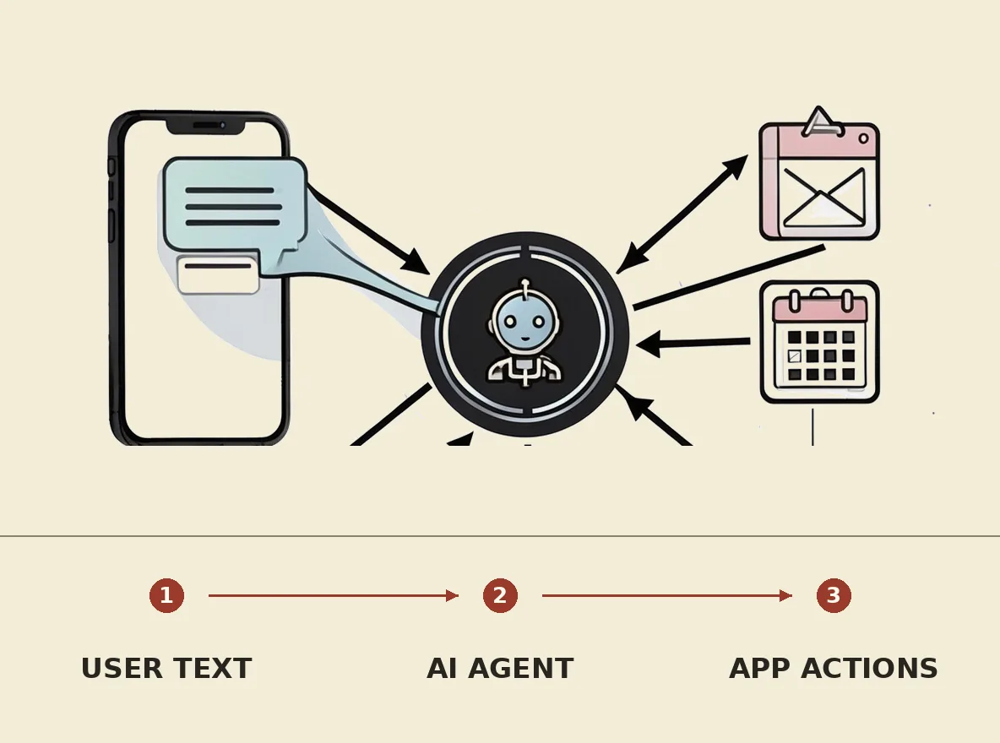

AI agents are increasingly integrating directly into text messaging platforms, allowing users to interact with them without downloading separate applications. These agents, such as Caddy and Fambot, can remember context, connect to existing apps like calendars and email, and perform tasks ranging from scheduling appointments and organizing family life to researching trips and online shopping. This development offers a streamlined and convenient way for users to leverage AI for daily tasks, reducing app clutter and simplifying digital interactions.